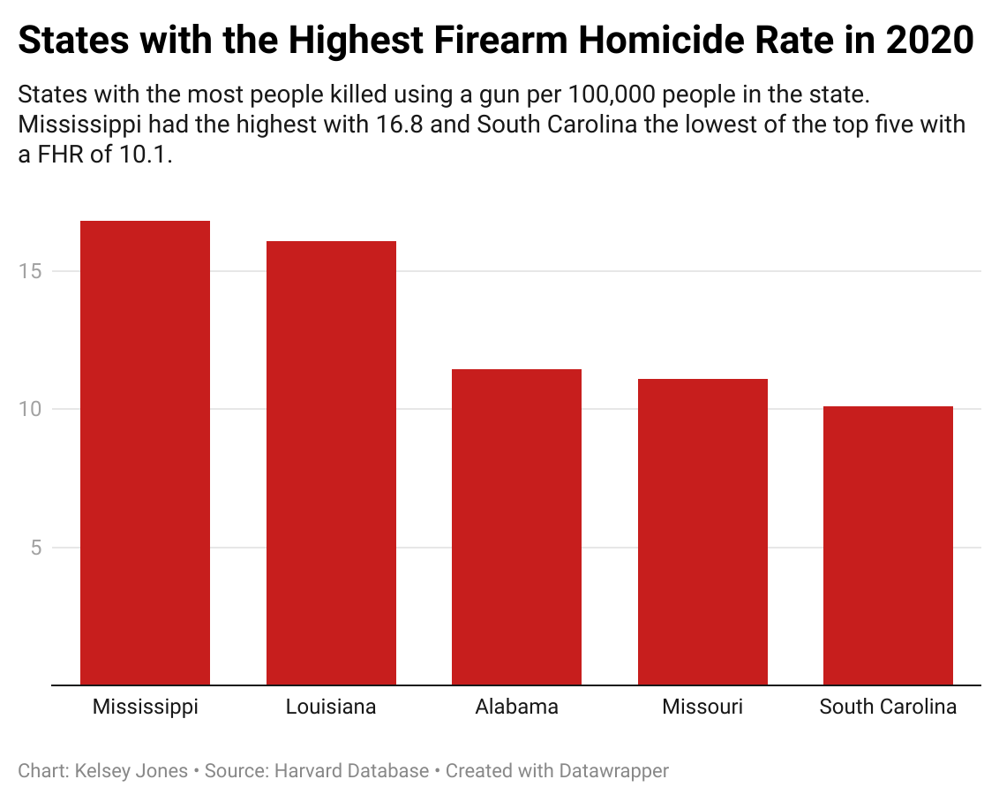

JNL 221 Final Project

Handguns account for a majority of gun-related deaths in the United States. Source: Getty Images
As Death Rates Rise, So Do Gun Mortality Rates
Gun violence now accounts for well over half of all homicides and suicides in the United States.
By Kelsey Jones
Three people were killed and five wounded in a mass shooting in Chicago, Illinois on December 2, 2024. Another two were shot and killed in Florida on December 1. Another two in San Antonio on November 28.
Individually two or three deaths may not seem like so many in a country that reports over 24,000 homicides per year. However, when shootings occur nearly every day, those numbers add up resulting in thousands upon thousands of gun-related deaths each year.
Gun violence accounts for the majority of all suicides and homicides in the United States over the past 70 years. In fact according to the Harvard Database, across the United States in 2020, firearm-related deaths account for over half of all reported homicides and suicides. In some states guns accounted for closer to 75% of those deaths.
Although firearms have always accounted for a large portion of deaths, the number has only gone up as guns become more commonplace. In the late 1940s, firearms resulted in just under half of all reported homicides and suicides.
By 2020 that number had increased to over 60% of all reported suicides and homicides in the U.S.

Many factors contribute to the rising firearm mortality rates including legislation in states, access to firearms, and suicide rates.
In states such as Missouri and Alabama which rank among the weakest in gun law strength as of 2024, the firearm homicide rate is more than five times that of states ranked among the top 10 strongest in gun control laws.
Comparatively, the average non-firearm homicide rate in the United States in 2020 sat at just over 1.67, more than 13 times less than the state with the highest firearm homicide rate.
While nationally, legislation such as the Brady Act in 1993 requiring background checks for guns purchased from federally licensed firearm dealers, has been passed to diminish the likelihood of a firearm getting into the wrong hands, gun control laws are largely in the states hands.
Professor Grant Reeher, senior research associate at the Campbell Public Affairs Institute and political science professor with an expertise in gun politics and policy at Syracuse University, argues that legislation is targeting the wrong issue. Many policies such as the Assault Weapon Ban of 1994 aim to remove high powered assault rifles from access, particularly following the growing epidemic of mass shootings in the United States.
Reeher asserts while removing these weapons from the wrong hands is necessary, in order to truly lessen the amount of firearm-related deaths, legislation needs to restrict access to handguns which account for the vast majority of gun-related suicides and homicides.
Reeher also advocates for red flag or extreme risk laws, revisions varying by state which further restrict access to firearms if a person is flagged as posing a risk to themselves or others. As of 2023 more than 20 states have adopted red flag laws.
In addition to policy, factors such as population density greatly contribute to the reported numbers of gun-related deaths in each state. While some states may have more restrictive legislation, the high number of densely populated cities within the state accounts for higher reported deaths. States such as California and New York frequently report among the highest number of gun-related deaths each year despite ranking as the two states with the most restrictive gun laws. While these states report more gun-related deaths than others, they report some of the lowest firearm homicide rates.

Aside from policy and population, suicide rates are a large contributor to gun-related deaths each year. In fact, suicide is the single biggest source of firearm-related deaths. Since 1950 suicides have accounted for about 66% of all firearm mortalities reported in the United States. As of 2020, that number has gone down to just over half of gun-related deaths.
In terms of suicide, another factor to consider is race. According to data from the Harvard Database, the firearm suicide rate among white citizens was on average higher than that among non white citizens. This may impact reported suicides state to state as those with larger white populations may report higher rates of gun-related suicide.
While the percentage of gun-related suicides has decreased overtime, as suicides still make up a large majority of reported deaths, mental health is a contributing factor which must be addressed to decrease firearm mortality.
Professor Reeher advocates for a comprehensive approach to decrease firearm mortality rate. He encourages approaching the issue as a complex matter which will require time, money and dedication to solve.
In a country with more firearms circulating than citizens, reform will take time. While the causes behind firearm mortalities are multifaceted spanning from mental health issues to firearm accessibility, there is an undeniable need to address the growing issue of public safety.